更加现实的动机
from z3 import *
# First we create an Integer Variable for each cell of the Sudoku grid.
# Each cell must contain a digit (1 to 9)
X = [ [ Int("x_%s_%s" % (i+1, j+1)) for j in range(9) ]
for i in range(9) ]
# Every digit has to be placed exactly once in each row
cells_c = [ And(1 <= X[i][j], X[i][j] <= 9)
for i in range(9) for j in range(9) ]
# Every digit has to be placed exactly once in each column
rows_c = [ Distinct(X[i]) for i in range(9) ]
cols_c = [ Distinct([ X[i][j] for i in range(9) ])
for j in range(9) ]
# Every digit has to be placed exactly once in each 3x3 subgrid
sq_c = [ Distinct([ X[3*i0 + i][3*j0 + j]
for i in range(3) for j in range(3) ])
for i0 in range(3) for j0 in range(3) ]
sudoku_c = cells_c + rows_c + cols_c + sq_c
instance = ((5,3,0,0,7,0,0,0,0),
(6,0,0,1,9,5,0,0,0),
(0,9,8,0,0,0,0,6,0),
(8,0,0,0,6,0,0,0,3),
(4,0,0,8,0,3,0,0,1),
(7,0,0,0,2,0,0,0,6),
(0,6,0,0,0,0,2,8,0),
(0,0,0,4,1,9,0,0,5),
(0,0,0,0,8,0,0,7,9))
# Note that we use the number 0 to indicate blank fields. We need to convert this input to the variables managed by z3:
instance_c = [ If(instance[i][j] == 0,
True,
X[i][j] == instance[i][j])
for i in range(9) for j in range(9) ]
s = Solver() # (1)
s.add(sudoku_c + instance_c) # (2)
if s.check() == sat: # (3)
m = s.model() # (4)
r = [ [ m.evaluate(X[i][j]) for j in range(9) ] # (5)
for i in range(9) ]
print_matrix(r) # (6)
else:
print("failed to solve") # (7)
(1): Create the Solver object (2): Adding our ruleset and our pre-filled grid to the solver (3): let z3 check if there is at least one solution satisfying all the rules (4): the model() method now assigns a value to each variable we defined (5): with the evaluate() method, we now just extract each variable’s value to build a 9x9 matrix
什么样的推理是正确/合法 (Valid) 的?
逻辑就是用数学的方法研究人类基本思维规律的一门学科
忘掉 “命题”!!!
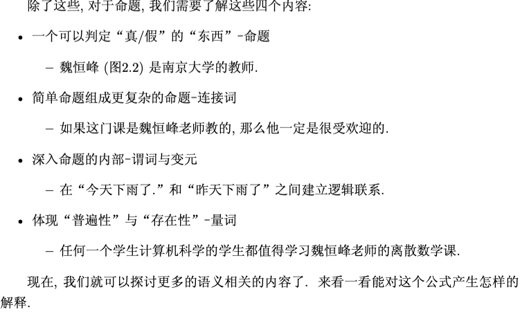
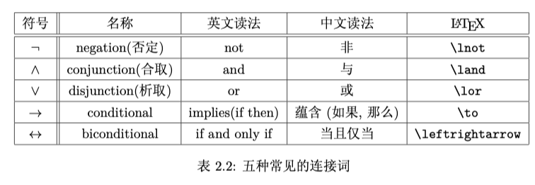
为什么叫做合取? 析取?
对于蕴含连接词
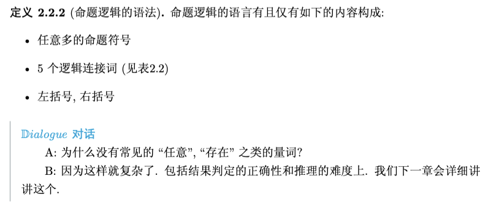
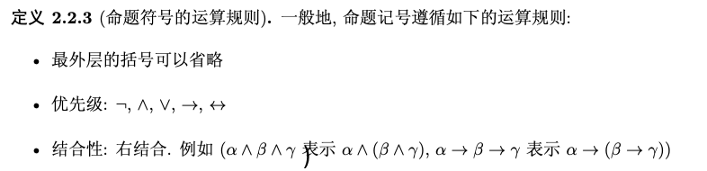
说明了如何理解这个命题公式.
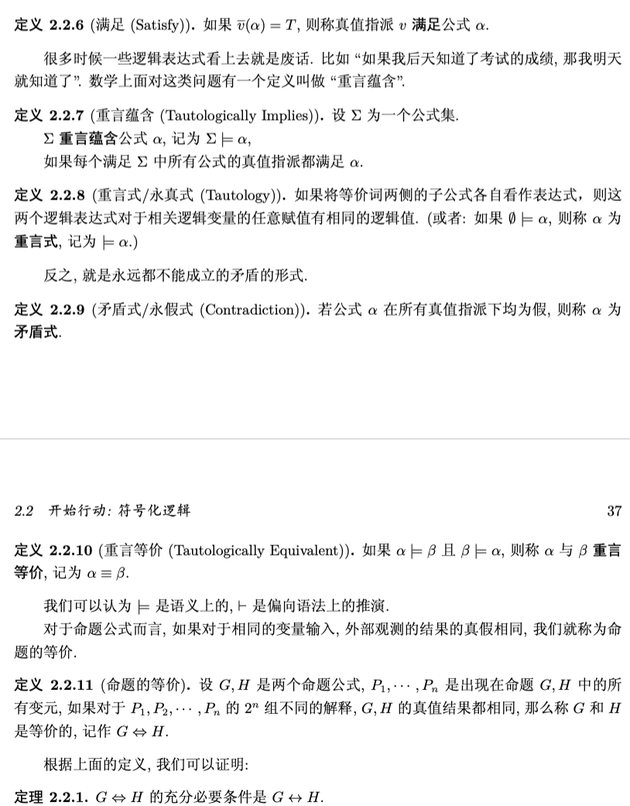
我们的课本里面处理的就比较粗暴了...
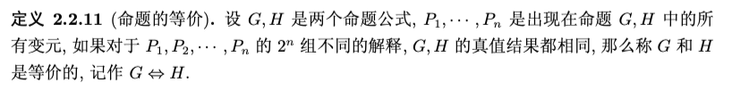
青春版: 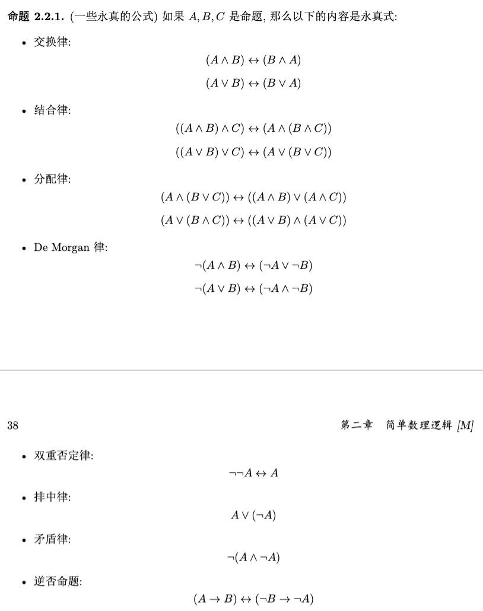
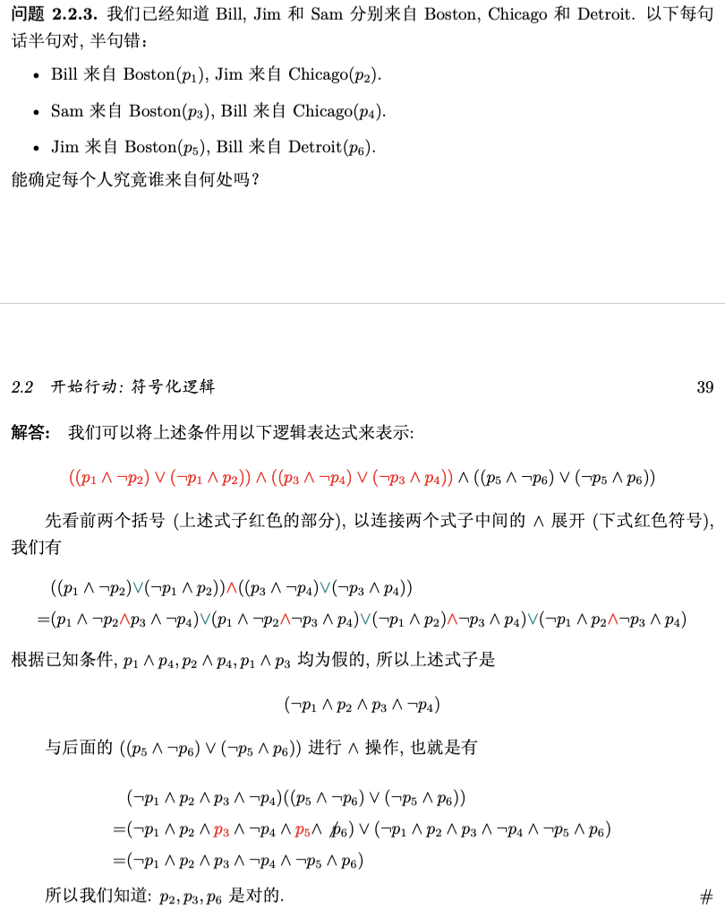
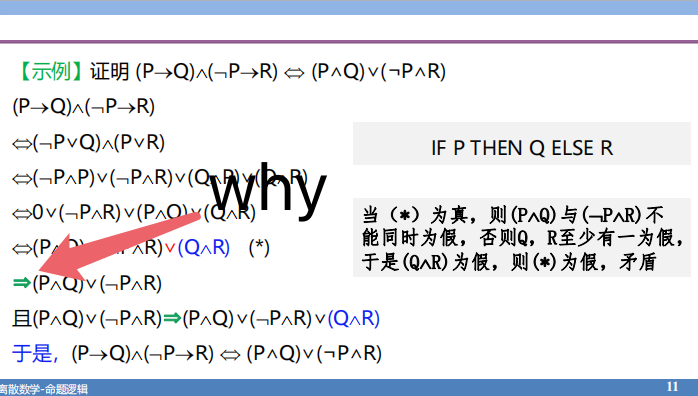
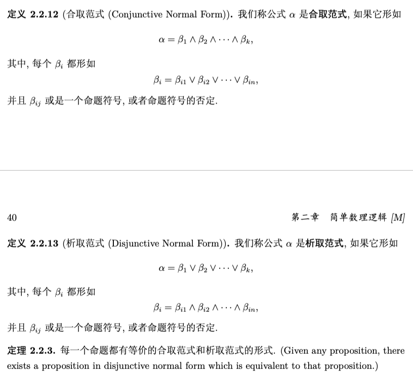
好处是什么?
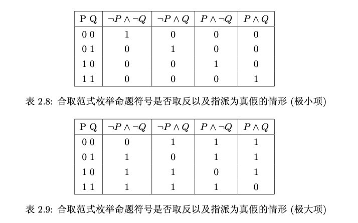
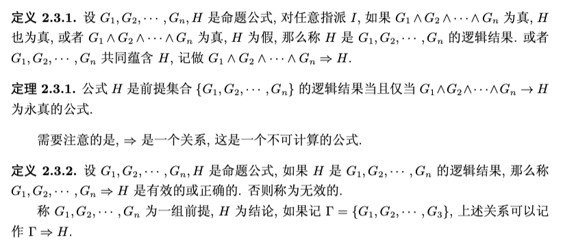
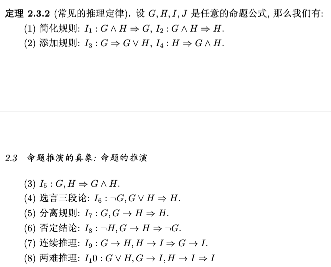